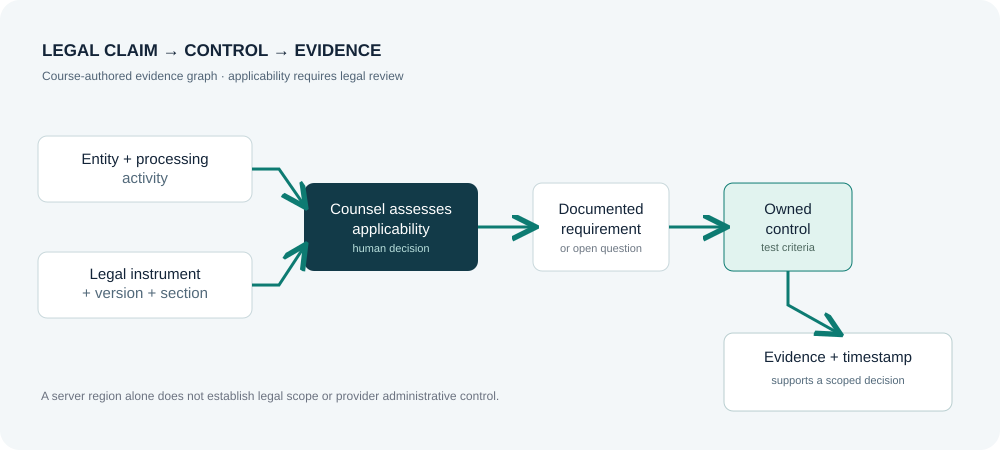

Module 05 — Which laws govern an enterprise sovereign AI platform?
Executive thesis: A provider can keep inference in the UAE and still leave significant legal, contractual, or operational questions unresolved. Start with entity, processing activity, data, people, and vendor roles; identify the applicable rules with counsel; then map each obligation to a control and test. Server region is a fact, not a legal conclusion.
| Course context | Detail |
|---|---|
| Part / week | II — Regional policy and governance / Week 5 |
| Reader | Intermediate AI PM moving into platform architecture |
| Effort | 2 h reading + 3 h lab + 2 h PM exercise + 1 h review |
| Last official-source check | 17 November 2026 |
| Prerequisites | Module 02 taxonomy; basic cloud data flows |
| Output | Regime triage matrix + control-and-evidence graph |
| Environment | Python 3.10+; local-first; runs on 16 GB Apple Silicon; no GPU/Docker required for this lab |
| Status | Teaching exemplar; not a legal opinion, compliance attestation, or production deployment |
1. Executive brief — what do you need to decide?
Scenario (fictional). GulfCare Group is an invented UAE-headquartered enterprise with teams in Abu Dhabi, DIFC and Saudi Arabia. It wants a document assistant for employees. Files are stored in an approved UAE region, but a support provider outside that region can access diagnostic logs. Management describes the solution as “UAE-sovereign.”
Decision: Should the PM approve that product label, and can deployment begin? Not yet. An architecture review can establish where processing occurs; it cannot by itself determine every legal obligation or who can lawfully or technically access information. Map actual processing, contracting entities and administrative paths first.
Recommendation: Agree on a precise contractual and technical sovereignty statement: which data, which operations, which people, which regions, which keys, which vendors, and which evidence. Have counsel assess law applicability before converting regulator materials into mandatory product acceptance criteria.
What would change the answer? Verified data flows, an agreed regulatory applicability analysis, enforceable access and transfer terms, controlled support operations, and reproducible tests.
2. Learning objectives
After the module you can: (1) classify likely legal exposure without making a legal determination; (2) distinguish jurisdiction, legal instrument, obligation, contractual requirement and control; (3) trace a requirement to test evidence; (4) identify unverified transfer and privileged-access paths; (5) produce a regulator-aware PM decision record.
3. Taxonomy, ontology & mental model
Taxonomy/ontology spotlight — the most important distinction in this module: Jurisdiction ≠ data center location ≠ controller establishment ≠ transfer mechanism ≠ vendor administrative boundary. See the course ontology. This is a course-authored model, not an official legal taxonomy.
3.1 Five different questions
| Question | Course ontology entity | Common mistaken shortcut |
|---|---|---|
| Which legal entity is acting and in what role? | Organization |
“The brand is UAE-based, so UAE federal law necessarily covers everything.” |
| What data is actually processed and for what purpose? | ProcessingActivity + Dataset |
“It is just an LLM request, not personal-data processing.” |
| Which rules could be relevant? | LegalJurisdiction + LegalInstrument |
“All regional data protection rules mean the same thing.” |
| What must be done after legal analysis? | Requirement → Control |
“Deploying in-region makes us compliant.” |
| What would prove a specific control works? | Test → Evidence |
“A vendor brochure is audit evidence.” |
A taxonomy classifies an AI workload or regulatory exposure. An ontology models relationships and constraints: a controller performs processing; an instrument contains provisions; counsel identifies applicable requirements; a product team implements controls; tests produce evidence. Do not implement a rule engine that makes automatic legal applicability decisions from a postal address.
3.2 The relationship graph

Diagram: the product team can automate evidence gathering; it should not replace the applicability decision made by qualified legal reviewers. See the editable SVG companion.

3.3 Keep obligations separate
Legal requirement: An applicable duty from an authoritative instrument. Regulatory guidance: A regulator’s interpretation or operational aid; its legal effect varies. Contractual obligation: A term negotiated with a customer/provider. Sovereignty objective: An organization-defined preference or risk tolerance that may go beyond law. Control: A technical, operational, or contractual measure. These can overlap, but they are not synonyms.
4. What the regional regimes actually say
4.1 UAE federal framework: start with scope, not a cloud-region choice
The UAE government lists the federal law by its formal name, “Federal Decree Law No. 45 of 2021.”1 This establishes the existence of a federal personal-data framework; it does not make every enterprise data flow subject to the same provision or automatically mandate all data stay in the UAE. The law’s application, exceptions, implementing material and other sectoral rules need legal review before an architecture decision is labelled legally required.
PM action: Record the exact UAE entity, dataset categories, the individuals concerned, and whether a federal, free-zone, sectoral or other regime may apply. Mark unanswered questions as unresolved.
4.2 DIFC: use the competent source and its assessment tools
DIFC identifies “Data Protection Law DIFC Law No. 5 of 2020” on its official legal database and records an amendment law in 2025.2 Its Commissioner provides an Applicability (Article 6) assessment and tools for Data Export / International Transfers (Articles 26 & 27).3 That is a reason to examine the relevant activity and current version, not to assume the presence of a DIFC office makes every company-wide workload a DIFC-only matter.
The DIFC tools expressly state they are “not intended to constitute legal advice.”4 A PM can prepare a fact packet, but a legal determination must be made by the appropriate reviewer.
4.3 ADGM: transfer mechanism is not the same as a blanket ban
The ADGM Office of Data Protection publishes guidance about the “mechanism and conditions required under the Regulations” for international transfers.5 It also describes ADGM standard contractual clauses as a safeguard in specified circumstances under Article 42(2).6 Interpretation: a product decision should distinguish a prohibited or restricted transfer, a transfer needing safeguards, and an organization choosing stricter residency for risk reasons. Avoid presuming all transfers are prohibited.
4.4 Saudi Arabia: restrictions, safeguards and risk assessment are distinct
SDAIA’s transfer regulation identifies “Standard contractual clauses” among its defined mechanisms and safeguards.7 Article 7 specifies circumstances where a controller shall perform a transfer risk assessment before specified cross-border transfers or disclosures.8 It would be inaccurate to generalize this into “no Saudi data may ever leave Saudi Arabia.”
PM action: For any KSA-linked processing, define transfer purpose, destination and recipients, processing role, and the applicable Saudi rule/version for counsel to confirm. Do not copy UAE compliance assumptions into a Saudi product specification.
4.5 EU comparison: AI rules and privacy rules are separate legal questions
The European Commission describes the AI Act as an AI-specific regulatory framework and lists its staged application and exceptions.9 EU AI Act obligations are not a synonym for GDPR personal-data transfer controls or enterprise sovereign architecture. A global company might need to assess several regimes in parallel; the AI Act schedule and amendments must be reviewed as of the product release date, not assumed static.
4.6 Source-backed evidence ledger
The excerpts below are short verbatim source fragments. They support narrow facts, not complete legal interpretations.
| ID | Exact short quotation | Primary source / pinpoint | What it supports | What it does not establish |
|---|---|---|---|---|
| L-01 | “Federal Decree Law No. 45 of 2021” | UAE Government, Data protection laws10 | Named UAE federal instrument | Automatic applicability, blanket localization mandate |
| L-02 | “Data Protection Law DIFC Law No. 5 of 2020” | DIFC legal database11 | Named DIFC instrument | Scope of a particular multinational processing flow |
| L-03 | “not intended to constitute legal advice” | DIFC tools, disclaimer12 | Limits of self-assessment tools | Definitive legal opinion |
| L-04 | “mechanism and conditions required under the Regulations” | ADGM, Guidance Part 613 | ADGM has transfer-specific framework | All transfers barred |
| L-05 | “Standard contractual clauses” | SDAIA Transfer Regulation, Art. 1/414 | Recognized safeguard mechanism | Suitability for this particular transaction |
Evidence freshness: All public URLs checked on 2026-11-17. In a live engagement, revalidate consolidated legislation, amendments and authoritative interpretation before implementation. The course does not claim these five fragments exhaust each legal regime.
5. Case study — GulfCare’s support logs (fictional)
Facts given: The platform accepts HR documents. User prompts and generated responses are stored in an approved UAE region. A vendor’s overseas support engineer can access diagnostic logs containing some prompt text. The group has entities in mainland UAE, DIFC and Saudi Arabia.
Unknowns: Which subsidiary contracts for processing? Are the logs personal data? Where are backups, embeddings and audit trails stored? Is remote access recorded or approved? What permissions and legal/contractual safeguards exist? Which activities occur in each regime? What have regulators or counsel said about the specific facts?
Sovereignty observation: Territorial placement may be consistent with a stated region requirement for the main inference service. Operational access and legal obligations remain unresolved. A document or screenshot showing a server’s region cannot prove a vendor’s support access is appropriately controlled.
Decision: Allow a limited pilot only with synthetic data and recorded exceptions. Do not approve a customer-facing “fully sovereign and compliant” claim. Commission legal scope analysis, vendor-access assessment, data flow capture, and contract review before using real employee data.
Global comparison: If GulfCare expands to EU users or sells into the EU, assess relevant EU rules based on activities, roles, systems and markets rather than presuming a single worldwide data policy.
6. Hands-on lab — build a legal-control-evidence graph
Question: Can you trace a hypothetical product claim to a rule, an accountable control, and something a reviewer can inspect?
Lab source: labs/module-05/ includes a synthetic JSON control catalogue and a Python validator. It uses Python’s standard library. No model download, cloud account, Docker, or external endpoint is required.
Run from the repository root:
python3 labs/module-05/validate.py labs/module-05/control_map.json
python3 -m unittest discover -s labs/module-05 -p 'test_*.py' -vExpected result: The validator reports the number of entries and warns about unresolved legal applicability or missing test evidence; it does not label the enterprise compliant. The unit tests cover a valid graph and deliberate evidence gaps.
Change one thing: Clone the JSON file, then remove a source_section or test_id. Run the validator again; confirm it rejects the weak mapping. Restore the original afterwards.
Acceptance criteria:
Optional extension: Store the relationships in PostgreSQL and add a user interface for exception owners. This is an engineering exercise, not regulatory automation or proof of compliance.
7. AI PM decision playbook — what would you sign off?
| Gate | PM question | Required artifact | Owner |
|---|---|---|---|
| Product scope | Which entities, people, data, and activities are in scope? | Processing inventory | PM + privacy |
| Legal scope | Which versioned instruments may apply to each activity? | Counsel-approved applicability record | Legal |
| Architecture | Where can prompts, logs, embeddings, backups and telemetry travel? | Annotated data flow | Architect |
| Operations | Which external people and services can access plaintext or keys? | Privileged-path inventory | CISO / vendor |
| Contracts | Are the actual data flows reflected in provider terms? | DPA / contract clauses | Procurement + legal |
| Evidence | What test proves each claimed control, for which environment? | Test evidence package | Engineering / assurance |
| Go/no-go | What remains open and who accepts the risk? | Exception & decision record | Product sponsor |
Recommended decision for the fictional case: Conditional pilot with synthetic information only. Production sign-off is blocked until the unresolved legal scope and vendor operational access have named owners, acceptance criteria and test evidence.
8. Economics, operating model and trade-offs
Adding controls can change inference cost, incident response, procurement lead times and support model. The PM should compare at least three options: (A) a managed regional deployment with contractual controls, (B) a provider with restricted local operations, and (C) a customer-operated stack. Do not assume one option is automatically cheapest or legally required.
For a basic TCO discussion, use:
Annual platform TCO = service fees + compute/storage + engineering + legal/privacy review + security operations + assurance/testing + migration/exit reserve
There are no numerical cost claims in this chapter because vendor pricing and staffing assumptions have not been selected. In the PM deliverable, record the sources, currencies, dates and sensitivity of any later estimates.
9. Failure modes you should challenge
- Residency as a substitute for scope analysis. Location of one database does not determine entity roles or governing instruments.
- Legal duties inferred from slogans. “Saudi rules require sovereignty” is not a substitute for a specific section and applicability rationale.
- Provider marketing treated as evidence. A brochure is a vendor assertion; request access paths, written terms and test outcomes.
- Regulations treated as timeless. Identify original instrument, amendments, version and review date.
- Automation posing as legal counsel. A classification script can flag gaps; it cannot decide the law.
10. PM deliverable — an evidence-based requirement matrix
Deliver a two-page decision memo and a sheet with one row per processing activity. The minimum columns are: activity, entities/roles, data categories, user geography, vendors/processors, all destinations, legal candidates and sections, legal reviewer/status, business sovereignty objective, proposed controls, evidence/test IDs, residual risk, owner, decision.
Definition of done: No unexplained “compliant” status; every legal source has a canonical link and pinpoint; at least two non-obvious trust boundaries captured; explicit decision and unblock criteria; a recorded question for legal counsel.
Capstone connection: This becomes the requirements-to-controls mapping for the enterprise platform’s policy gateway, audit system and vendor due-diligence process.
11. Knowledge check — questions only
- Why is a UAE deployment region insufficient to determine which privacy law applies?
- How are a legal requirement, internal sovereignty objective, and technical control different?
- In the fictional case, what additional data would you collect before permitting overseas support access?
- What does an ADGM transfer safeguard tell you, and what does it not tell you, about a specific transfer?
- What three pieces of evidence would you request before accepting a vendor’s “sovereign” claim?
Scenario challenge: GulfCare’s supplier presents a region screenshot, a third-party security certification, and a contract stating “data stored in UAE.” The supplier refuses to disclose overseas support operations. Write a 150-word go/no-go decision and the minimum additional evidence needed to change your answer.
Separate solutions: See assessments/solutions/05-laws-regulation-jurisdiction-solutions.md in the private authoring repository; this file is intentionally excluded from the learner site.
12. Key takeaways
- Legal applicability is a reviewed relationship between a specific entity, activity and instrument—not a function of where a server happens to be.
- Different UAE and GCC frameworks require separate applicability assessments and source-version tracking.
- A sovereignty claim is credible only at the scope of its actual tests and contracts.
- The PM’s job is to structure the decision, surface gaps and assign owners—not make unsupported legal conclusions.
13. References — checked originals, precise scope
The named institutions and direct URLs below are primary-source starting points. Short verbatim excerpts appear in Section 4, with the limitations of their implications stated explicitly. Legal advice must be based on the appropriate consolidated authoritative text for the specific fact pattern.
14. Publish, reflect, and continue
Website route: /modules/05-laws-regulation-jurisdiction.html with accessible graph, citations and source-review date. Question-led social derivative: social/module-05/SLIDES.md and 05-questions.pdf. Editorial quality: not approved as a substitute for legal review; technical lab can be validated locally; separate-model review awaits independent output.
Next: Module 06 addresses the governance and risk-management operating system that sustains these requirements after the initial procurement decision.
UAE Government, Data protection laws, official overview naming Federal Decree Law No. 45 of 2021. Official page. Source checked: 2026-11-17. For statutory analysis consult the current official federal legislation text, version and language with legal counsel.↩︎
Dubai International Financial Centre, Data Protection Law DIFC Law No. 5 of 2020, official legal database; see amendment listing. Official DIFC law page. Source checked: 2026-11-17.↩︎
DIFC Commissioner of Data Protection, Tools & Templates; applicability (Art. 6), international transfers (Arts. 26–27), disclaimer. Official guidance and tools. Source checked: 2026-11-17.↩︎
DIFC Commissioner of Data Protection, Tools & Templates; applicability (Art. 6), international transfers (Arts. 26–27), disclaimer. Official guidance and tools. Source checked: 2026-11-17.↩︎
Abu Dhabi Global Market, Office of Data Protection, Guidance, Part 6 and Standard Contractual Clauses for Transfers (Art. 42(2) guidance). Official ADGM guidance. Source checked: 2026-11-17.↩︎
Abu Dhabi Global Market, Office of Data Protection, Guidance, Part 6 and Standard Contractual Clauses for Transfers (Art. 42(2) guidance). Official ADGM guidance. Source checked: 2026-11-17.↩︎
Saudi Data & AI Authority, Regulation on Personal Data Transfer Outside the Kingdom, especially Art. 1 definitions, Art. 4 safeguards, Art. 7 risk assessment. Official SDAIA regulatory portal. Source checked: 2026-11-17.↩︎
Saudi Data & AI Authority, Regulation on Personal Data Transfer Outside the Kingdom, especially Art. 1 definitions, Art. 4 safeguards, Art. 7 risk assessment. Official SDAIA regulatory portal. Source checked: 2026-11-17.↩︎
European Commission, AI Act — Regulatory framework (scope and application timeline). Official European Commission page; for current consolidated text and amendments also use EUR-Lex Regulation (EU) 2024/1689. Source checked: 2026-11-17.↩︎
UAE Government, Data protection laws, official overview naming Federal Decree Law No. 45 of 2021. Official page. Source checked: 2026-11-17. For statutory analysis consult the current official federal legislation text, version and language with legal counsel.↩︎
Dubai International Financial Centre, Data Protection Law DIFC Law No. 5 of 2020, official legal database; see amendment listing. Official DIFC law page. Source checked: 2026-11-17.↩︎
DIFC Commissioner of Data Protection, Tools & Templates; applicability (Art. 6), international transfers (Arts. 26–27), disclaimer. Official guidance and tools. Source checked: 2026-11-17.↩︎
Abu Dhabi Global Market, Office of Data Protection, Guidance, Part 6 and Standard Contractual Clauses for Transfers (Art. 42(2) guidance). Official ADGM guidance. Source checked: 2026-11-17.↩︎
Saudi Data & AI Authority, Regulation on Personal Data Transfer Outside the Kingdom, especially Art. 1 definitions, Art. 4 safeguards, Art. 7 risk assessment. Official SDAIA regulatory portal. Source checked: 2026-11-17.↩︎
Turn the question into a decision.
Try the local lab, then explore the HTML version of the LinkedIn question deck.
Open practical lab ↗Open question deck ↗